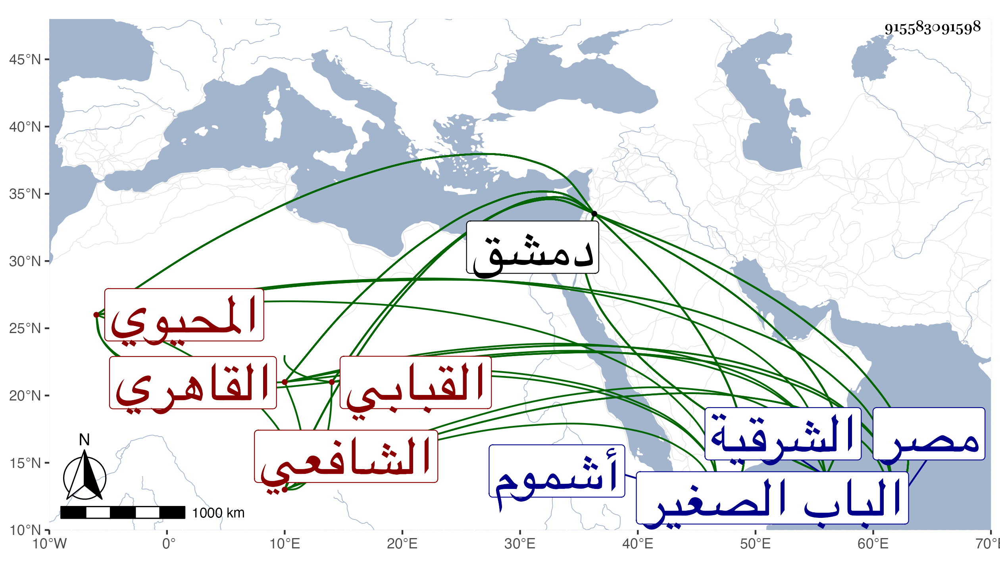

0902Sakhawi.DawLamic.ITO20230111-ara1.EIS1600.915583091598
Biography ID: 915583091598
1051
يحيى بن يحيى بن أحمد بن الحسن المحيوي أبو زكريا القبابي بموحدتين نسبة إلى القباب قرية من أشموم الرمان من الشرقية القاهري الشافعي نزيل دمشق . ولد سنة إحدى وستين وسبعمائة تقريبا بالقباب وكان أبوه خطيبا فمات عنه صغيرا فتنزل في مكتب الأيتام بمدرسة حسن فقرأ القرآن والتنبيه والحاوي معا ومختصر ابن الحاجب الأصلي وألفية ابن ملك وغيرها وأخذ عن البلقيني وابن الملقن والبدر الطنبدي ولازم الأبناسي فانتفع به كثيرا وأخذ علم الحديث عن الزين العراقي والعربية عن المحب بن هشام والمعقولات عن العز بن جماعة وتقدم على أقرانه في جميعها وأذن له البلقيني وغيره بالإفتاء سنة ثلاث وثمانين وسبعمائة ثم قدم دمشق في سنة خمس وثمانين فنزل بالقيمرية وسمع من المحب الصامت جزء الخليلي وأخذ عن الزهري والقرشي وابن الشريشي وشهدوا له بالفضيلة حتى قال الزهري ما قدم علينا من مصر مثله وأذن له هو وغيره بالإفتاء أيضا وكان حين قدومه مشهورا باستحضار الروضة بل كان عارفا بدقائق الحاوي ثم جلس للإقراء بجامع بني أمية فأخذ عنه جماعة من الفضلاء ثم ترك الإقراء وأقبل على الوعظ وصنف فيه كتابا وتكلم على الناس بالجامع فأكبوا عليه وراج فيه أمره واشتهر بالفصاحة وحسن الأداء وانتفع به كثير من العامة ثم لما وسع الأمير ناصر الدين محمد بن منجك مسجد القصب تكلم فيه على آية إنما يعمر مساجد الله وحضر عنده الشهاب بن المحمرة القاضي وغيره من علماء دمشق وكان مجلسا جليلا ، وسكن بعد الفتنة العظمى بيت روحاء فأقام ودخل إلى دمشق مع من دخلها من الشاميين ثم عاد فلازم عمل الميعاد وقرأ صحيح البخاري عند نوروز ، ودرس في دمشق بعدة مدارس كالرواحية وناب في الشامية البرانية وأعاد بالشامية ... الكبرى، وناظر الفحول وزاحم العلماء فاشتهر أمره واتضح علمه وبان مقداره وناب في الحكم عن الأخنائي والنجم بن حجي فمن بعدهما ، وكان عارفا بالقضاء يقظا لكنه كان يشين نفسه بالأخذ على الأحكام ويتهافت في ذلك دون سائر رفقته مع الغناء وعدم الحاجة واستمر كذلك إلى أن ضعف بصره جدا ثم أضر ولم يترك مع هذا الحكم بل كان يؤخذ بيده فيعلم بالقلم ثم لما مات أقرانه وخلت دمشق منهم عاد إلى الجامع الأعظم فاجتمع عليه الطلبة بل غالب فضلاء دمشق وقسموا عليه التنبيه والمنهاج والحاوي في أشهر قليلة من ثلاث سنين بدون مطالعة وربما استعان بمطالعة بعض أصحابه له ، وافتى زمنا قبل الضرر وبعده ويكتب عنه حينئذ ثم يكتب هو اسمه ، وكان إماما علامة فقيها واعظا فصيحا ذكيا جيد الذهن مشاركا في عدة فنون حسن التقرير قادرا على إيصال المعاني للإفهام مع لين العريكة وسهولة الانقياد والمروءة والعصبية وقلة الحسد ولما تزايد ضعف بصره انقطع بمنزله مديما للتلاوة ويبرز في يوم الاثنين والخميس للإشغال في الجامع إلى أن مرض بالقولنج فتغير مزاجه ثم عوفي منه ثم عاوده فضاقت أخلاقه لذلك ولم يزل يتزايد به إلى توفي في منزله بمسجد القصب بعد عصر يوم السبت ثامن عشر صفر سنة أربعين ودفن من الغد بمقبرة الباب الصغير شرقي سيدي بلال بالقرب من جادة الطريق وكثر الأسف عليه وكانت جنازته حافلة وتقدم للصلاة عليه السراج الحمصي مع كونه أوصى للشيخ أحمد الأقباعي فلم يلتفت لذلك ورثاه جماعة رحمه الله وإيانا ، وذكره شيخنا في سنة تسع وثلاثين من إنبائه فقال اجتمع بي في ذي الحجة سنة ست وثلاثين بالعادلية الصغرى وذكر أنه قرأ على شيوخنا العراقي والبلقيني وغيرهما وسمع من ابن المحب وسمعت عليه جزءا من حديثه وسمع علي شيئا . ومات في صفر ولكنها من سنة أربعين وذكره التقي بن قاضي شهبة في طبقاته فقال الشيخ العالم المحدث الفقيه الواعظ وأرخ مولده في أواخر سنة ستين أو أول التي تليها وقال أن حفظه للحاوي بعد كبره وتميز وفضل ، وترجمه بما اعتمد عليه شيخنا في إنبائه .
